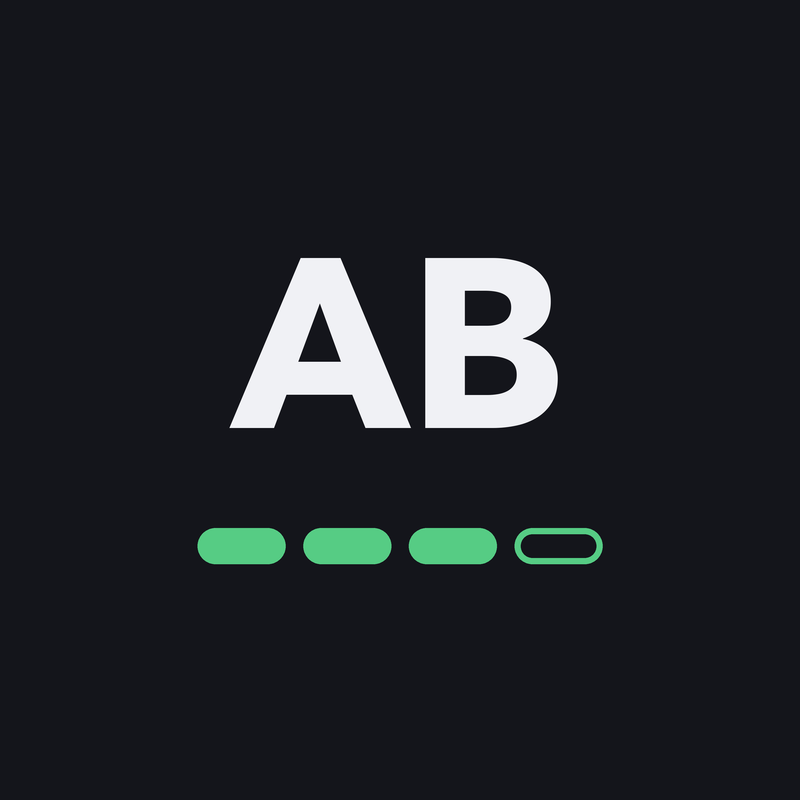
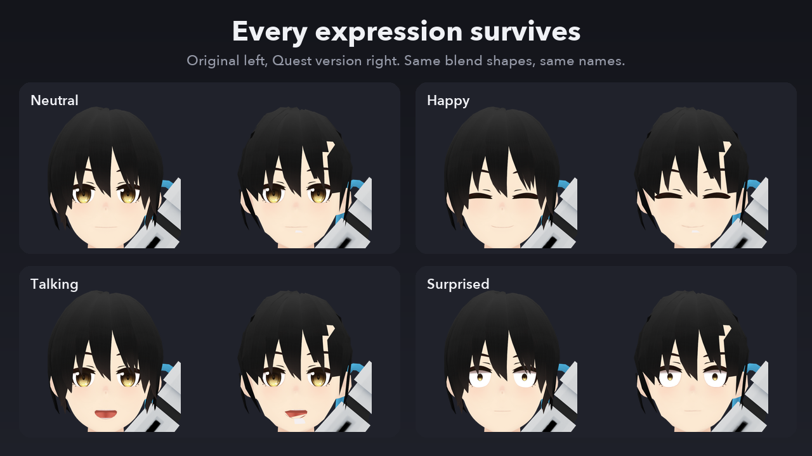
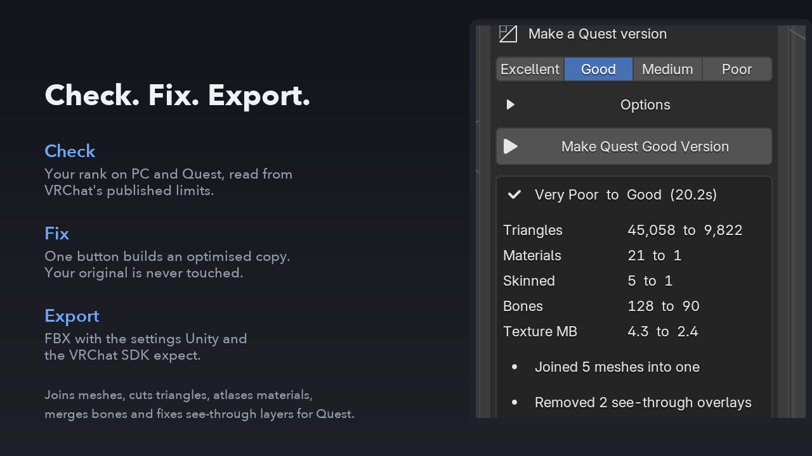
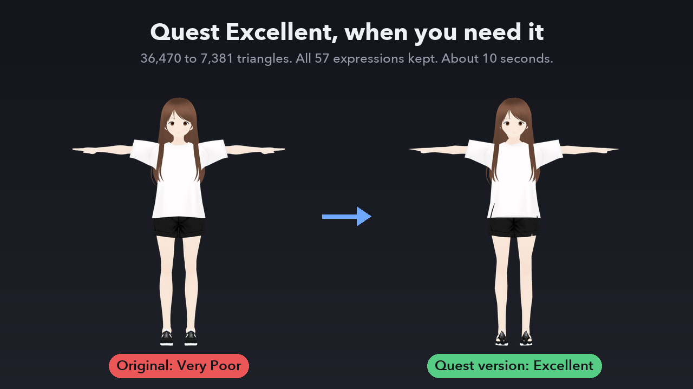

A Blender add-on that checks a VRChat avatar against the PC and Quest performance ranks, then makes an optimised Quest or PC version in one click, with every expression intact.
Rank on PC and Quest, counted the way VRChat counts it: triangles, texture memory, skinned and basic meshes, material slots, bones and size. Limits come from VRChat's published tables.
Pick a target rank and press Make. An optimised copy appears; the original is never touched. Meshes joined, triangles cut, materials atlased, bones merged.
One button writes an FBX with the settings Unity and the VRChat SDK expect, with textures saved beside it.
Free VRM sample avatars from the VRM Consortium, on Blender 4.2 LTS and 5.2.
| Avatar | Before | After | Detail |
|---|---|---|---|
| Seed-san | Very Poor | Quest Good | 45,058 to 9,822 triangles, 21 to 1 materials, 128 to 90 bones, all 43 expressions kept, about 20 seconds |
| VRM1 Twist Sample | Very Poor | Quest Excellent | 36,470 to 7,381 triangles, all 57 expressions kept, about 10 seconds |
| Seed-san | PC Poor | PC Good | 21 materials to 1 atlas, about 1 second |


